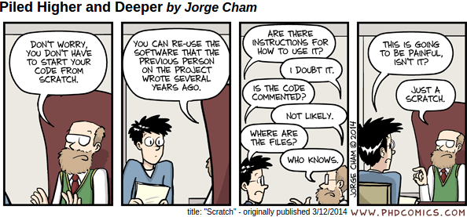

Reproducible Workflows with R
Vicky Steeves and Nicholas Wolf | DATE
Get this presentation:

Intro to Reproducibility
Obligatory (but relevant) PhD comic strip...
Why Reproducibility?
"If I have seen further, it is by standing on the shoulders of giants." - Sir Isaac Newton
To build on top of previous work – science is incremental!
To verify the correctness of results
To defeat self-deception1
To help newcomers
To increase impact, visibility2 and research quality3
Why Reproducibility? Think Selflessly
Others can re-use and extend your work more easily!
- You can even find interesting collaborations and future research projects out of this.
YOU can re-use and extend your work more easily! (sort of selfless...)
- Future you is your greatest collaborator.
Newbies to the field can more easily learn the methods by reproducing your work!
- Your reproducible work is their greatest teacher.
Reproducibility vs Replicaiton
Reproducibility
Independently confirm results with the same data and code
Replication
Independently confirm results with new data and code
Reproducibility on a spectrum
Reviewable Research: Sufficient detail for peer review & assessment.
Replicable Research: Tools are available to duplicate the author’s results using their data.
Confirmable Research: Main conclusions can be attained independently without author’s software.
Auditable Research: Process & tools archived such that it can be defended later if necessary.
Open/Reproducible Research: Auditable research made openly available.
Even if runnable, results may differ
We investigated the effects of data processing variables such as FreeSurfer version (v4.3.1, v4.5.0, and v5.0.0), workstation (Macintosh and Hewlett-Packard), and Macintosh operating system version (OSX 10.5 and OSX 10.6). Significant differences were revealed between FreeSurfer version v5.0.0 and the two earlier versions. [...] About a factor two smaller differences were detected between Macintosh and Hewlett-Packard workstations and between OSX 10.5 and OSX 10.6.
Challenges in Reproducibility
So, what do we need?
Working Reproducibly with R
Prerequisites
Please make sure you have the following installed:
- R & RStudio
- R Markdown --
install.packages("rmarkdown") - knitr --
install.packages("knitr") - packrat --
install.packages("packrat")
Let’s take 5 minutes to make sure everyone has these things installed.